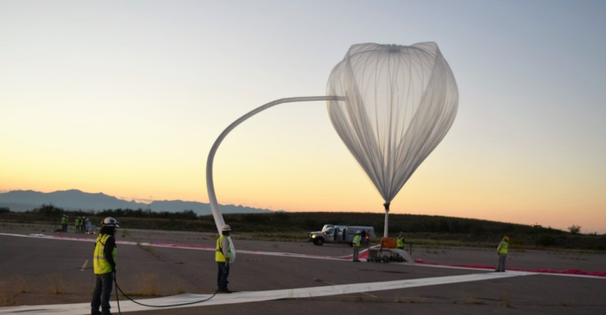

Стратосферные аэростаты предназначены для построения систем коммуникаций (интернет, мобильная телефония, телевидение и связь).
Могут они использоваться и как наблюдательные пункты (например, восемь стратосферных дирижаблей могут закрыть западную границу России). Еще одна сфера – военное применение при проведении антитеррористических операций и в региональных конфликтах.
На высотах базирования 20-22 км дирижабли не могут быть уничтожены ни противовоздушными зенитно-ракетными комплексами, ни артиллерийскими системами.
Плотность воздуха в нижних слоях стратосферы на порядок меньше, а на высотах около 30 км на 2 порядка меньше, чем на уровне моря, поэтому для создания достаточной аэростатической подъёмной силы объём баллона должен быть достаточно большим и, как правило, превышает 14 000 м³, а объём самого крупного баллона составлял 850 000 м³.
Как правило, баллон стратостата наполняется гелием, в довоенное время в ряде полётов применялся водород, который в смеси с воздухом крайне взрывоопасен.
Обычно оболочку баллона делают из очень тонкого и прочного пластика. В большинстве случаев баллон оборудуется клапаном для стравливания газа, который используется для обеспечения снижения стратостата, а также для уменьшения скорости подъёма во время взлёта.
Оболочка гондолы должна выдерживать значительное внутреннее давление, она изготавливается из лёгких металлов, таких как алюминий, и обычно имеет сферическую форму.
Для поглощения углекислого газа может применяться гидроксид лития, для восполнения запасов кислорода — баллоны со сжатым, а также с жидким кислородом.
Система терморегуляции служит для поддержания комфортной температуры в гондоле. Во всех полётах гондола оснащается внутренним и наружным термометрами и высотомером, достаточно часто используются счётчики радиоактивных частиц, оборудование для определения химического состава или забора проб воздуха, фото- и видеооборудование. В ряде полётов в состав оборудования включался телескоп для проведения астрономических наблюдений.